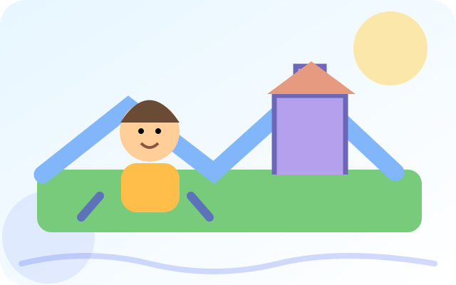
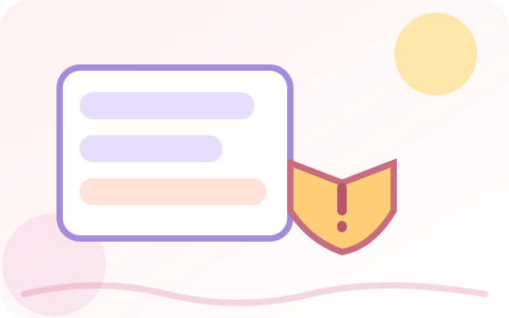
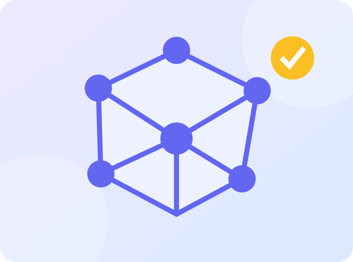
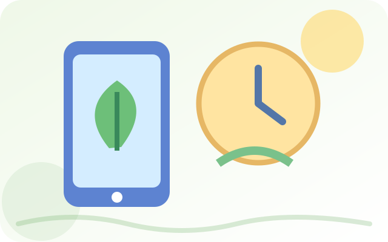

Інформатика · 6 клас
7 яскравих уроків про штучний інтелект, цифрову безпеку та життя онлайн. На Вас чекають симуляції, завдання «Перетягніть», тренажери й власні мініпроєкти.

Як ШІ створює ігрові світи?
Створіть ігровий світ, задайте правила для NPC і перевірте, як він реагує на події.
Відкрити урок →Урок 2Фейки та зображення, створені ШІ
Станьте цифровим детективом: перевіряйте підозрілі фото, підписи та джерела.
Відкрити урок →Урок 3Надійні паролі та двофакторна автентифікація
Навчіться захищати акаунти, складати парольні фрази й розпізнавати небезпечні прохання.
Відкрити урок →
Соціальна інженерія: пастки шахраїв
Розпізнавайте психологічні хитрощі, підозрілі прохання та повідомлення.
Відкрити урок →
Як навчається штучний інтелект
Проведіть експеримент із прикладами, даними та помилками моделі.
Відкрити урок →
Цифровий баланс: онлайн та офлайн
Дослідіть свій день, увагу, відпочинок і корисні цифрові звички.
Відкрити урок →Урок 7ШІ в медицині: помічник лікаря
Дізнайтеся, як технології допомагають лікарям і чому остаточне рішення залишається за фахівцем.
Відкрити урок →Кожен урок завершується PDF-звітом. Усі завдання працюють на смартфоні.